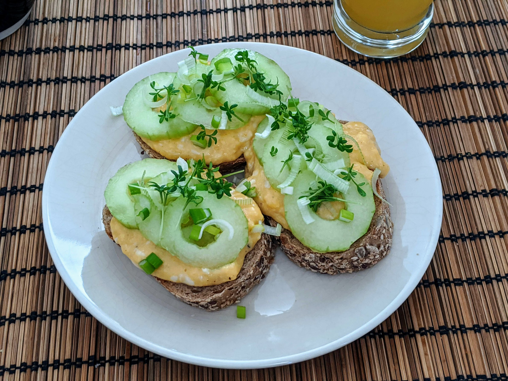

Œufs brouillés fabuleux

Ici en toasts avec des concombres, du cresson et des oignons frais
Pour 2 personnes :
- 4 ou 5 œufs
- Une bonne cuillère à soupe de beurre (disons, 25g)
- Un nuage de crème ou de lait (disons, 100mL)
- Sel, poivre, muscade
- Faire fondre le beurre dans une poêle qui n'attache pas.
- Pendant ce temps, battre les œufs en omelette dans un bol avec la crème, un peu de sel, de poivre et de muscade.
- Mettre le mélange dans la poêle et mélanger avec une spatule. Laisser chauffer à feu moyen-doux, et — c'est ça qui fait toute la magie — enlever du feu dès que ça commence à attacher.
- Remettre sur le feu après avoir mélangé et qu'il n'y a plus rien qui attache. Répéter le processus jusqu'à ce que ça prenne une consistance qui se tienne. Ça prend une petite demi-heure, et ça vaut la peine.
- Déguster immédiatement. Il ne faut pas hésiter à sortir du feu avant que ça ait l'air tout à fait cuit, les œufs brouillés faits de cette manière sont bien plus "luisants" que si on les cuit à feu fort d'une seul traite, donc ils ont l'air un peu liquides même si leur consistance est parfaite.